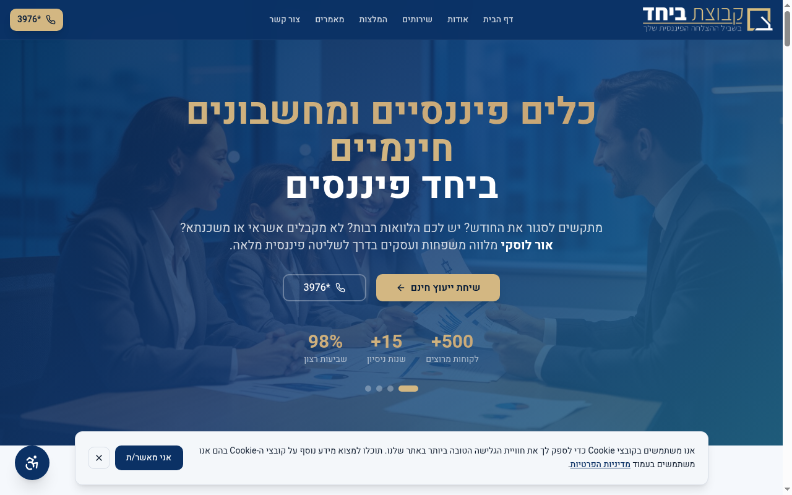
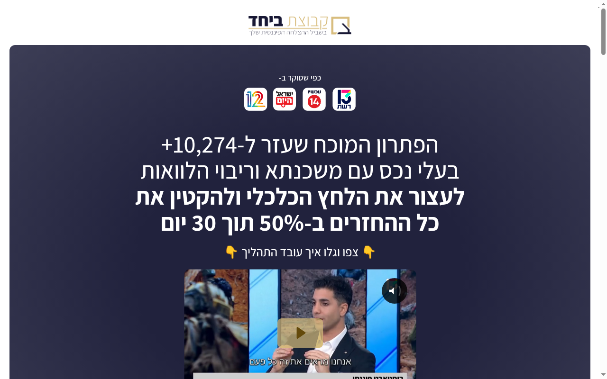

SOURCE financeb-desktop-1280.png

CLONE index.html?qc=1
שמאל = צילום מקור · ימין = clone · גללו כל זוג · לא menifa.org · noindex


מטריקות: ssim/report.md · שני ציונים נפרדים לכל URL · claim_100 רק אם SSIM==1.0 בדיוק.